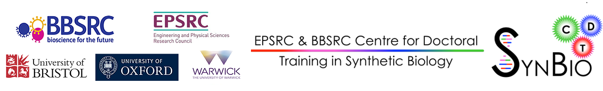

Synthetic Biology is defined as the "engineering of biology". It aims to apply engineering design principles and approaches in order to construct biological circuits, devices and systems for a particular purpose and application.
One major area of synthetic biology is the genetic engineering of cells, in order to create synthetic genetic circuits with some desired function, meeting a specification. This is reminiscent of the design of electrical circuits, where capacitors, inductors, resistors etc are linked together to form a circuit with a particular behaviour (e.g. a filter). Examples of Synthetic Biology circuits that have been designed to date include switches, oscillators or simple feedback control loops. Most of these circuit designs operate within a single cell, with the circuit within each cell being isolated from the others.
Cells have evolved several mechanisms to communicate and affect each other, e.g. through so-called quorum sensing molecules. Previous work has shown that it is possible to create population-level behaviours, but there are several unanswered questions on what type of circuits is achievable and when a circuit should be built across populations, rather than being implemented within a single cell.
This doctoral project will first investigate how to harness chemical communication between cells and how to build synthetic genetic circuits that span more than one cell, creating behaviours in populations of cells. It will take a systems and control engineering approach, using mathematical modelling, simulation, and theoretical tools from control theory to compare the relative performance that can be achieved using independent cells, a single type of communicating cells, and two types of communicating cells. Moreover, the addition of cell-cell communication provides an additional level at which feedback can act which will be investigated at depth numerically and analytically. It is known that feedback can improve the system behaviour and its robustness, but its design needs to be done carefully. In fact the whole question of how to best design a circuit and what network topology should be used requires careful characterization of the trade-offs involved, just as in any other engineering discipline. This project will examine these tradeoffs, in order to determine how, and under what circumstances, splitting a circuit across two cell types can improve its performance and what effect intra and inter-cellular feedback could have on the operation of these circuits. It will investigate approaches for designing multi-cellular genetic circuits, building on previous work in the areas of Bio-Design Automation (BDA) and Genetic Design Automation (GDA), inspired by Electronic Design Automation (EDA).
The ultimate aim is to develop a design framework (including associated algorithms and software) for designing a circuit at the population level.
In the course of this project, we realised that there were several software tools that we would like to use but which did not already exist; we therefore had to write them ourselves.
Software developed during the project is released under a free-software license (the BSD license).
James Scott-Brown acknowledges funding from the University of Oxford, the EPSRC & BBSRC Centre for Doctoral Training in Synthetic Biology (grant EP/L016494/1), and the Dstl.
 {% endblock %}